Obscenity / Sexuality / Atheism
in Western World Literature
Welcome to a section of Western World Literature that will focus on issues of obscenity, sexuality, sexual orientation, love, education, free thought, and atheism in literary and philosophical works of the so-called "Western" tradition, from Ancient Greece to the present. In this course we will consider the comic, picaresque, fabliaux, folk humor, carnivalesque, bawdy, filthy, scandalous, sacreligious, irreligious, anti-religious, and "popular," as opposed to the tragic, epic, heroic, beautiful, revered, edifying, sacred, morally uplifting, or "cultured."
We will examine texts through the lense of "obscenity," a word in whose Greek origin refers to that which is out of the scene, "off-stage." Drawing on thinkers including Marx, Freud, Bakhtin, and Foucault we will reflect on the social construction of that which should not be known, and the political and psychological purposes and implications of repression.
As the term "literature" is clearly under investigation, so the term "West" or "Western" is recognized in this class as a commonly accepted construct of Orientalist discourse -- although an interrogation of that term is not a focus of this section, suspicion of the category, of the existence of a "Western world" is registered at the outset. Although translation is also not a topic we address, our focus, by catalog description, is on works outside English, British, and American traditions. Indeed, the very idea of a "survey" course, spanning more than 2000 years in one semester, "covering" a variety of cultures, languages, literatures, and traditions is also obviously problematic. Categories such as "Ancient," "Medieval," "Renaissance," "Early Modern," "Enlightenment," "Modern," will be treated with skepticism.
We are interested in the past, and the representation of the past, as a history of the present, in order to understand and act in the present day. We will consider the content and purposes of a course titled "Western World Literature" and of education in general -- those students planning on becoming teachers will have opportunities to prepare for and think critically about their role.
There is no required textbook for the class, though studying textbooks and anthologies and the syllabi of courses similar to and different from this one (see below) may be an activity of interest. Instead, our on-line syllabus serves as an electronic, hyperlinked, textbook, opening to all the resources of the internet and vast on-line (and brick and morter) archives, libraries, and resources. All students will participate regularly in our on-line discussion at Nicenet.org -- posting at least once before every class. There will also be the opportunity to select from a variety of trade texts for group and independent reading.
The reading material in this class is suitable for mature audiences willing to attempt to understand the moral universe of other times and cultures as well as their own. If this class is not right for you, please take a different section.
Our class meets Tuesday and Thursday from 12:30 to 1:45 in 2209 Sangren Hall. Because class discussion is central to the course, participation is vital -- our learning depends on each other. Attendance will be taken and missing classes will lower your grade. Missing more than four classes may lead to failing. This course will follow WMU policies regarding academic honesty.
WMU has many resources to foster student health and well-being. I support the Safe on Campus environment (387-2123). If at any point in the semester if you feel stress, English 3120 does offer free on-line therapy from Eliza!
My office is 723 Sprau Tower, 387-2605. Office hours are immediately after class and by appointment. You can always reach me via email.
Reading  |
Extensive reading from digital archives and the internet. One essay involves a $3 fee. Some handouts. In groups students will select and purchase novels and texts from the 19th and 20th Centuries related to course themes. See Literature Circles. |
|
2. Exam: Ancient Texts, Feb 7 (20%) 3. Paper: Comparing and contrasting ancient and early Renaissance texts, 5 page minimum. Due: Mar 11 (20%) [Sample papers 1 & 2 & 3] 4. Exam: Medieval and Modern (20%) Mar 25 5. Paper: Analysis of 19/20 Century works drawing on course themes. 5 page minimum. Due: Apr 21 (20%)
|

Electronic Syllabus
Jan 10 Thursday: Educating the Guardians
|
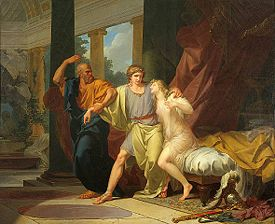"Socrates Tears Alcibiades from the Embrace of Sensual Pleasure," by Jean-Baptiste Regnault (1791) |
Jan 15 Tuesday A Scandalous View of the Socratic School
Read: The Clouds by Aristophanes (423 BC) Johnston Translation, Perseus Archive, or Hickie Translation (Optional: Critical Essays: "On Satire" Study Resources: Dunkle Study Guide)
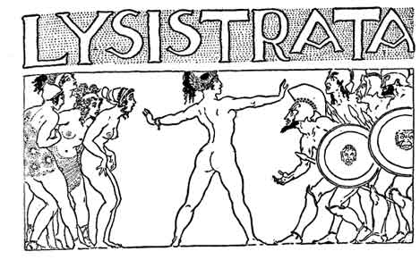
Jan 17 Thursday: Sex and War in Ancient Greece
Read: Lysistrata by Aristophanes (411 BC) Perseus Archive, Project Gutenberg, or Eserver (Optional: Study Questions, Study Guide, Modern implications: Lysistrata Project)
Jan 22 Tuesday Celebration of Homoerotic Love
| 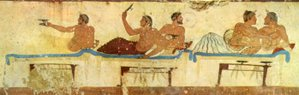 | Read: "Symposium" by Plato (385) BC Project Gutenberg (you can skip the long translator's introduction) or Perseus Archive. (Optional: Wikipedia on "symposium" and on Plato's Symposium) |
Jan 24 Thursday Blaspheming the Gods
|
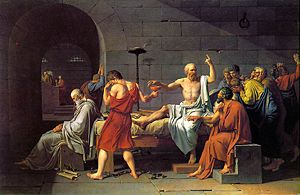 "The Death of Socrates," by Jacques-Louis David (1787) |
Jan 29 Tuesday Roman Decadence
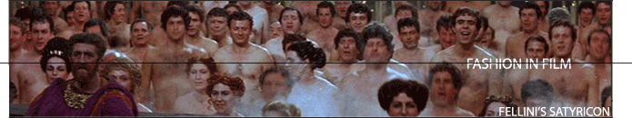
Scene from Fellini's Satyricon
Read: The Satyricon by Petronius (61 AD) Sacred Text Archive, Project Gutenberg I , or Project Gutenberg II
Also: Wikipedia "Homosexuality in Ancient Rome," "Slavery in Ancient Rome, Roman Empire.net "Household Sex" (Optional: Background, Wikipedia, view Fellini's Film)
Jan 31 Thursday Decadence Continued
|
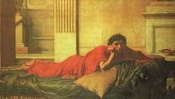"The Remorse of Nero after Killing his Mother" by John Waterhouse, 1878 |
Feb 5 Tuesday Ancient and Modern Sexuality
|
|

Feb 7 Thursday Exam I: Ancient Texts
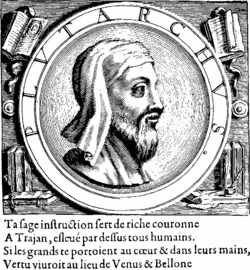
|
Feb 12 Tuesday
|
Feb 14 Thursday (Valentine's Day!) Fabliaux I
|
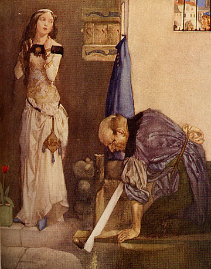 John, Alisoun, Nicholas (1913) |
Feb 19 Tuesday Fabliaux II
|
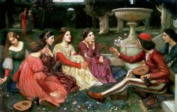 "A Tale from the Decameron" John William Waterhouse |
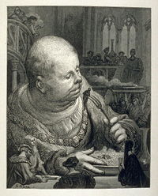 |
Feb 21 Thursday The Carnivaleque
|
Francois Rabelais |
Feb 26 Tuesday Nursery Rhymes, Mother Goose
|
Feb 28 Thursday Don Juan Tirso de Molina's The Trickster of Seville (1630) (Optional: exploration of Don Juan theme: Moliere's Dom Juan ou Le Festin de Pierre (1665), Byron's Don Juan (1821), Jose Zorrilla y Moral's Don Juan Tenorio (1844), etc.) Mar 2-9 Spring Break
|
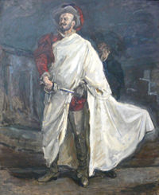 Don Juan in Don Giovanni by Mozart |
 Candide Shooting Monkeys (1803) |
Mar 11 Tuesday The Picaresque Read: Candide by Voltaire (1759) at Wikisource, Ebooks, Oregon State. Ancient / Medieval Comparison Paper Due
|
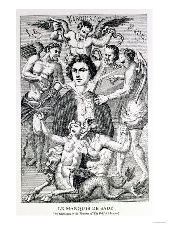 |
Mar 13 Thursday Sexuality and Philosophy
Read (only as far into it as you wish): "Philosophy in the Bedroom" by Marquis de Sade (1795 CE) 2002 Translation (pdf)
Mar 18 Tuesday Class Repression
Read: Communist Manifesto, sections I & II & IV by Karl Marx (1848 CE), Communist Manifestoon, and "Marx on Religion" (Optional: Brian Study Guide, Wikipedia on Marx)
Karl Marx 1818-1883 |
Mar 20 Thursday Psychic Repression Read: "Pschoanalysis" by Terry Eagleton, from "The Mechanism of Pleasure and the Psychogenesis of Jokes" from Jokes and their Relation to the Unconscious by Sigmund Freud (1905 CE) and "Freud and Religion" (Optional: Wikipedia on Freud, "Freud's View on Religion," "Two Views of the Comic Freud and Bakhtin")
|
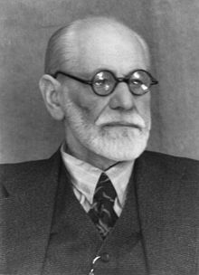 Sigmund Freud 1856-1939 |
Mar 25 Tuesday Exam II: Medieval to Modern
Mar 27 Thursday Literature Circles
Apr 1 Tuesday
Apr 3 Thursday
Apr 8 Tuesday
Apr 10 Thursday
April 15 Tuesday
April 17 Thursday
April 21-25: Finals Week
April 21 Monday 12:30-2:30 Scheduled Final Exam
Class Evaluation
Paper Due
Resources
Courses with Related Themes:
CLEN 4525 Banned Literature, Jonathan Able, Columbia University
English 493 The Obscene Machine, William Nericcio, San Diego State
Classics 240 Scandalous Arts in Ancient and Modern Communities, Ralph Rosen, Pennsylvania
CLST 277 Roman Decadence, Kenneth Mayer, Howard
English 179 Flesh and Spirit, Jeffery Cohen, George Washington
English 90 Banned Books: What They Didn't Want You to Read in High School, Glyniss Carr, Bucknell
English 183 Banned Books and Changing Cultures, Rebecca Romanow, U of Rhode Island
JOMC 144 Censorship, Chuck Stone, Ibibio
LIBR 593 Ethics and Intellectual Freedom, Ann Cury, British Columbia
Other Western World Literature Courses:
English 2301 World Literature, Merrilee Cunningham, Houston
Lit 125 Great Books that Shaped the Western Tradition, Keith Leonard, American
English 231 Literature of the Western World, North Alabama
English 221 Literature of the Western World, Hans Kellner, North Carolina
English 108 Western World Literature, Eleanor Latham, Central Oregon
CMLT 2210 Western World Literature, McFry, U of Georgia
English 2613 Western World Literature I, Rebecca Howard, Texas Christian
English 109 Western World Literature, Cora Agatucci, Central Oregon
English 202 Western World Literature II, Diane Wilcox, Gwynned-Mercy
English 120 World Literature I, Creighton
English 2230 World Literature I, Western Nebraska
Websites of Interest:
Citizens for Literary Standards in Schools
William Douglass Dissent in Roth Case